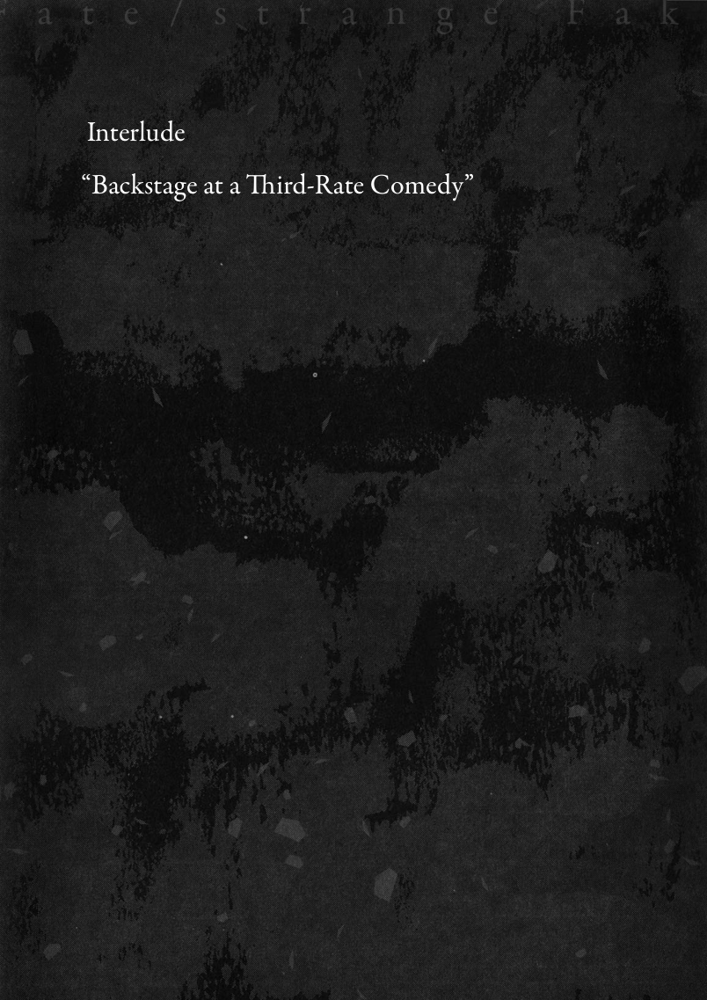

Voltemos ao momento em que o grupo de Sigma se encontrou.
Quando Sigma revelou que era outro Mestre participando da Guerra do Santo Graal, a mulher asiática que se apresentava como Ayaka ficou um pouco na defensiva. Saber, porém, não demonstrou nenhuma preocupação especial.
"Imagino que não se importaria de apresentar seu Espírito Heroico também?", perguntou ele com aquela voz clara e ressonante.
"...Não posso me dar ao luxo de mostrar minha mão."
Sigma balançou a cabeça.
"Ele gritou o nome Chaplin", interveio Assassin, que observava a conversa de lado.
Sigma se calou. Os olhos de Ayaka se arregalaram de surpresa.
"Ah, esse nome eu já ouvi com certeza..."
"Uma das obras desse ator estava entre os filmes exibidos no clube ontem!"
Os olhos de Saber voltaram a brilhar de maneira escancarada. "..."
As emoções de Sigma eram fracas demais para lhe arrancarem um suor frio. Mesmo assim, teve a sensação de que a situação acabara de ficar complicada.
O que aconteceria se explicasse que havia firmado um contrato com — ou sido possuído por — um Servo chamado "Watcher"? Se acreditassem nele, talvez conseguisse sobreviver. Isso se jogasse as cartas direito.
Considerando os conselhos que as "sombras" lhe deram durante sua fuga anterior de Assassin, a capacidade de extrair informações sem dúvida podia ser vista como poderosa. Se conseguisse se vender como um recurso útil, qualquer um certamente concluiria que era mais vantajoso usá-lo do que matá-lo.
Tais dúvidas lhe passaram pela cabeça, mas não bastaram para mudá-la. Ele já havia decidido lutar não como Soldado A, mas como Sigma. Não era uma resolução capaz de mudar sua vida — as "sombras" o haviam empurrado nessa direção. Era um objetivo incerto, mas ao menos ele já não tinha motivo para continuar sendo "Soldado A" por dever à sua contratante, Francesca.
Sigma se perguntou se simplesmente não querer morrer era uma razão boa o bastante para escolher um modo de vida. Ainda assim, antagonizar descuidadamente os Espíritos Heroicos diante dele encurtaria sua vida. Decidiu manter a conversa amigável enquanto escondia, por ora, as habilidades do próprio Espírito Heroico.
"Não vai apresentá-lo agora? Já sabemos o nome dele, e eu gostaria de prestar minhas homenagens a um ator."
"...Ele diz que atores se mostram nos filmes. Não vai aparecer diante de pessoas ele mesmo."
Sigma havia inventado uma desculpa razoável para se esquivar do pedido de Saber. Ainda assim, pensou que não era lá muito convincente.
"Entendo", assentiu Saber com firmeza, aceitando sem dificuldade. "Consigo compreender."
"Você consegue..."
Ayaka lançou a Saber um olhar de censura, mas não fez nenhum esforço adicional para insistir no assunto.
Tendo garantido uma espécie de armistício, Sigma voltou ao quarto e soltou um suspiro de alívio.
Eles haviam decidido manter o máximo de sigilo mútuo. Ele não se meteria nos assuntos de Ayaka, e em troca eles não questionariam sua posição nem sua lealdade. A proposta partira dele, e Saber, de modo surpreendente, a aprovara sem dificuldade.
Será que Saber sempre prioriza os próprios instintos e sentimentos e, como regra geral, não pensa muito em nada? Sigma seguiu esse pensamento repentino com outro, mais assustador: o fato de Saber ter deixado sua marca no mundo como herói mesmo colocando as emoções em primeiro lugar significava que escondia poder suficiente para compensar isso.
Nesse momento, uma "sombra" na forma de um cavaleiro, cuja presença Sigma nem percebera ao lado dele, falou.
"Você tem bons instintos. Esse é mesmo o tipo de rei que ele é — um homem apaixonado, que põe acima de tudo os sentimentos do momento. Seu Nome Verdadeiro é Ricardo, o Coração de Leão... embora eu duvide que você conheça esse nome. Você ao menos conhece a história da busca do Graal do Rei Arthur?"
"Até eu sei disso. É uma comédia do Monty Python."
"..."
O cavaleiro ficou em silêncio por algum motivo e então desapareceu. O Capitão continuou em seu lugar.
"Bom, seja como for, esse garoto Ricardo domina o campo de batalha emocional como se fosse o jardim da própria casa. É um leão com pele de homem, mas ainda assim o povo o amava. Talvez tenha algum truque secreto para manipular o coração humano. Fique de olho nele."
Em outras palavras: "Não baixe a guarda."
Era perfeitamente possível que confiar tão facilmente nas pessoas fosse um blefe. Sigma pensou que precisaria tomar cuidado para não acabar levando uma facada pelas costas. Por outro lado, também queria ver até onde conseguiria levar aquele armistício.
Passar pela noite é ótimo, mas como devo agir daqui para a frente?
Seu primeiro objetivo era sobreviver. Ele sentia isso com ainda mais força depois do confronto com Assassin.
A sombra da morte pesava sobre ele muito mais do que em qualquer missão comum. Ele estava na América urbana, mas aquilo quase parecia a infância que passara "naquele" país. Sigma começava a sentir nostalgia quando um pensamento repentino o atingiu:
Um ser humano comum sentiria mais medo ou mais pânico? Tinha a impressão de que, ao menos, as pessoas que conhecera nas missões teriam vivido de forma mais desesperada em circunstâncias parecidas.
Muita coisa foi feita na minha cabeça. Só tentar me comparar com outras pessoas já é loucura?
Soltou um pequeno suspiro e percebeu que, no fim, uma boa noite de sono e refeições regulares já eram metas de vida suficientes por enquanto. Eram coisas de que, neste país, num lar normal, se podia desfrutar sem esforço. Sigma, porém, conhecia países onde isso não acontecia — sua terra natal, por exemplo — e por isso reconhecia o valor de uma noite bem dormida e de comida na mesa.
Nesse sentido, minha aposta mais segura seria me juntar a Faldeus, que tem o apoio do Estado... mas duvido que contar só com isso baste para sobreviver a esta Guerra do Graal. É essa a sensação que tenho.
Sigma continuou ponderando até o amanhecer, quando recebeu uma comunicação do próprio Faldeus.
"...Cattle chamando Famine. Alguma movimentação?"
"...Uma mulher que parece ser Assassin apareceu na mansão e sofri um ataque."
"Ah, aquela que atacou a delegacia... Impressionante você ter sobrevivido. Ou será que o Servo que invocou era superior...? O que aconteceu com Assassin?"
O tom de Faldeus trazia uma leve surpresa. Ele tinha uma baixa opinião de Sigma como mago e provavelmente não esperava que sobrevivesse à sua primeira batalha da Guerra do Graal.
"Saber e sua Mestre chegaram depois disso e propuseram um cessar-fogo. Eu aceitei."
"...O quê?"
Faldeus mergulhou em alguns silêncios pensativos enquanto Sigma prosseguia com o relatório. Em seguida, passou apenas o mínimo de instruções. Deviam propor uma aliança contra o Rei dos Heróis e contra o igualmente poderoso Lancer, ao mesmo tempo em que tentavam obter informações.
Sigma achou que isso talvez fosse difícil. Afinal, mal recebera essa ordem e a "sombra" de asas mecânicas já apareceu para dizer:
"Ah, eles já formaram uma aliança com Enkidu — o Lancer que rivaliza com o Rei dos Heróis. Estou falando do grupo do Saber."
Sigma ainda se perguntava se devia ou não relatar aquilo a Faldeus quando Faldeus o interrompeu com uma pergunta própria.
"Por falar nisso, já identificou o Espírito Heroico que invocou?"
"Sim. Meu Espírito Heroico é..."
Devia ao menos relatar a Faldeus a verdade?
"Cuidado", sorriu o Capitão atrás dele. "Assassin está de olho em você."
"..."
Sigma lançou um olhar ao espelho da penteadeira. Teve a sensação de que as sombras num canto do quarto estavam mais negras do que o normal. Além disso, embora as "sombras" não estivessem acima de omitir deliberadamente informações importantes, nunca haviam mentido.
Pensando que devia eliminar o maior número possível de fatores hostis, Sigma fingiu não perceber nada e respondeu num tom neutro.
"...Chaplin. Lancer Charlie Chaplin. Esse é o Espírito Heroico que invoquei."
"...Desculpe, pode repetir?"
"Lancer Charlie Chaplin. Em breve determinarei seu Fantasma Nobre e suas habilidades. Concluí que usar um Selo de Comando para forçá-lo a falar não é uma boa estratégia. Com licença."
Sigma desligou o comunicador mágico em forma de fone de ouvido e suspirou.
"...Era nesse aliado que você depositava confiança?"
"...Você estava aqui, Assassin?"
"Não confio plenamente em você. Responda à pergunta."
Assassin o fitou com intensidade através da abertura do capuz.
"Não confio em ninguém", respondeu Sigma. "Nem na minha contratante, nem em mim mesmo. Não acredito em deuses, nem em demônios, nem sequer na magia que uso."
Depois de uma pausa, Assassin tornou a falar. Parecia confusa.
"Você não reza para deus nenhum?"
"Não. Eu... ainda não sei o que chamam de 'graça de Deus'."
Assassin então lhe perguntou por que não acreditava em Deus. Sigma ainda pensava em como expressar aquilo de um jeito compreensível quando começou a responder.
"...Não vejo sentido suficiente em viver para chamar o simples fato de nascer de graça de Deus. Vi crianças da minha aldeia morrerem assim que nasceram, antes mesmo de terem tempo de abrir os olhos. As pessoas que nos criaram arrancavam fetos que nem sequer tinham nascido do ventre das mães para usar em experimentos mágicos. Eles nos criaram para nos transformar em armas místicas."
Era um passado grave só de ouvir o começo, mas Sigma continuou a relatá-lo a Assassin sem emoção, como se estivesse listando fatos.
"As pessoas que me criaram diziam que... as pessoas que comandavam o país eram deuses. Mas aquele país foi destruído. Por um grupo que se chamava de magos. Então eu nem sei, de verdade, o que é 'Deus'. Acho que acreditar neles sem entendê-los talvez só sirva para incomodá-los."
O que é que eu estou dizendo? Assim não vou transmitir nada. Acabei respondendo honestamente sem querer, mas como alguém poderia confiar em mim se eu mesmo não confio em ninguém?
Sigma decidiu que havia dado a resposta errada em sua essência e se arrependeu profundamente. Porém...
"...Entendo. Sinto muito. Fiz você se lembrar de algo que deve ter sido doloroso."
Havia gentileza na voz de Assassin quando ela respondeu. A hostilidade que permanecera ali até um instante antes desaparecera por completo.
"Não precisa se preocupar; é uma história comum. Comparado aos mercenários da minha aldeia que ainda estão em zonas de guerra, imagino que eu seja privilegiado. Só não consigo apreciar muito bem isso."
Sigma passara boa parte do último ano lutando contra feras demoníacas e magos desviantes enquanto trabalhava para Francesca. Ainda assim, quando chegava a uma área urbana como aquela e via na TV imagens de zonas de guerra, não conseguia evitar pensar que, por todos os direitos, devia ter morrido como um cão naquele lugar quando ainda era criança. Mesmo assim, não conseguia chamar suas circunstâncias atuais de "graça de Deus".
Assassin balançou levemente a cabeça para ele.
"Há pessoas cobertas de dor e sofrimento em toda parte. No mundo humano, sofrimento e tristeza são tão comuns quanto alegria e prazer. Mesmo assim, não se deve rir deles como se fossem algo banal."
Assassin estreitou os olhos enquanto o observava.
"Você não é como os magos que enfrentei antes. Você realmente não acredita em nada... É isso que seus olhos dizem. Mas você não nega toda a criação; apenas ainda não encontrou algo suficiente para merecer sua fé."
Sigma sentiu como se tivesse sido completamente desvendado. Tentou desviar o olhar, mas não conseguiu. Era como se os olhos profundos de Assassin o sugassem para dentro deles.
"Agora, além de imatura, estou maculada pela Energia Mágica de um demônio. Em circunstâncias normais, eu deveria falar com você sobre a fé, mas perdi esse direito."
Depois de se repreender, ela tornou a se dirigir a Sigma.
"Ainda assim, eu desejo que, quando enfim nascer algo digno da sua crença, seja ao menos algo bom."
Quando terminou de "desejar" — e não de rezar — Assassin deixou o quarto para trás. "..."
Sigma ficou atônito por algum tempo, até que uma voz o chamou por trás.
"Que foi? Não vai me dizer que foi amor à primeira vista? Hein?"
Era uma "sombra" grande e musculosa. Sigma balançou a cabeça em silêncio.
"Não... É só que é a primeira vez que alguém realmente deseja alguma coisa por mim. Tirando as 'súplicas' da Francesca."
Sigma pensou por um instante e então perguntou à sombra: "Ei, comida e uma boa noite de sono são coisas boas?"
"Nah. Pra começo de conversa, uma boa noite de sono não é uma coisa em que se acredite."
Algumas horas depois, a voz do Capitão despertou Sigma de uma cochilada na cadeira.
"Ei, garoto. Tá acordado?"
Sigma, que propositalmente mantivera o sono leve em caso de emergência, respondeu na hora.
"O que foi?"
"A gente não responde a menos que perguntem, a não ser quando é perigoso. Alguns dos seus amigos — uma equipe chamada Thorn, ou algo assim — estão espalhados ao nosso redor."
"!"
Thorn era o codinome dado a uma das equipes operacionais de Faldeus. Da mesma forma, Faldeus era Cattle e Sigma era Famine. Thorn, porém, era uma unidade de assalto antimago particularmente bem armada. Sigma a vira fuzilar em pedaços o corpo de um titereiro chamado Rohngall pelos olhos de um familiar.
"Pelo jeito, não confiam em você, garoto", riu o Capitão. "Esse sujeito chamado Faldeus mandou eles observarem você. Watcher não lê pensamentos, então não faço ideia de como Faldeus pretende servi-lo no prato no fim das contas."
Francamente, a habilidade de Sigma não estava à altura de enfrentar a unidade inteira. Se tivessem recebido ordens para descartá-lo, ele não teria como lutar, a menos que seu Servo fornecesse poder de combate real. Se fosse contra uma gangue local, uma coisa; mas ele não tinha poder de fogo para romper uma equipe antimago em formação tática, mesmo que a habilidade de Watcher lhe permitisse compreender os movimentos de todos os membros.
Entendo. Faz sentido: se eu não confio, eles também não vão confiar.
...Não acho provável, mas também é possível que a história do Chaplin tenha sido descoberta.
A "sombra", tendo percebido que Sigma acreditava de verdade que seria capaz de enganar Faldeus, pareceu querer dizer alguma coisa, mas Sigma saiu andando antes que pudesse começar. Para obter poder de fogo, ele cogitava colocar alguém em dívida com ele e cobrar essa dívida ao mesmo tempo.
Fingiu que estava fazendo uma comunicação e então deu um aviso — começando por Assassin, que encontrou pelo caminho.
"...Acabei de receber notícias da minha verdadeira contratante. Disseram que esta casa está cercada por uma unidade especial das forças americanas."
Mesmo usando sua verdadeira contratante — Francesca — como pretexto, Sigma continuou pensando. Refletia sobre que caminho devia seguir — não obedecendo ordens como fizera até então, mas por vontade própria, e puramente para sobreviver.
E, enquanto fazia isso, desejava para si mesmo — e para "Watcher" — o poder de iluminar seu caminho, nem que fosse apenas um passo à frente.